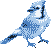

Front — 3.75 × 2.25in with bleed

London Marketing Solutions
Back — 3.75 × 2.25in with bleed
London Marketing Solutions
London Marketing Solutions Ltd. London, Ontario
Printed proof: two pages, front then back. Red dashes are the trim line
— art runs past it, type never reaches it. Rebuild the artwork with
node card/src/bird2svg.js and node card/src/qr.js.
See card/README.md.